﷽
Hamed Nilforoshan
I am a Computer Science PhD student at Stanford University, advised by Prof. Jure Leskovec. Previously, I was a Machine Learning Data Scientist at Airbnb. I received my Bachelors in Computer Science at Columbia University, where I was advised by Prof. Eugene Wu.
I am broadly interested in developing data science and machine learning methods to quantify, understand, and mitigate structural inequalities. I am grateful to be supported by the Knight-Hennessy and NSF Graduate Research Fellowships.
2023
|
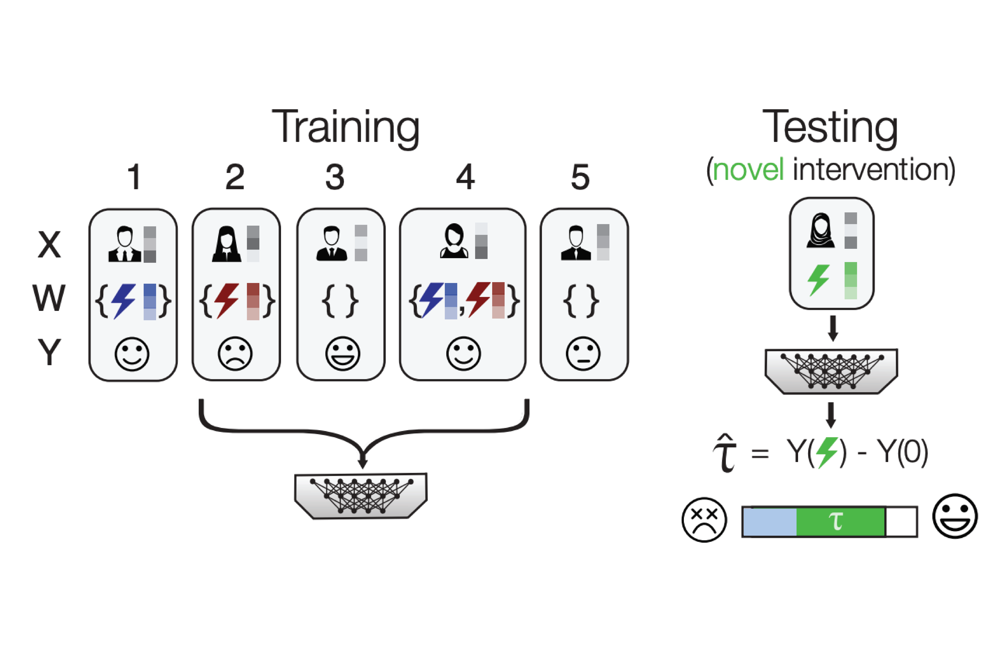
|
Zero-shot causal learning
Hamed Nilforoshan*, Michael Moor*, Yusuf Roohani, Yining Chen, Anja Šurina, Michihiro Yasunaga, Sara Oblak, Jure Leskovec NeurIPS 2023 Spotlight |
|
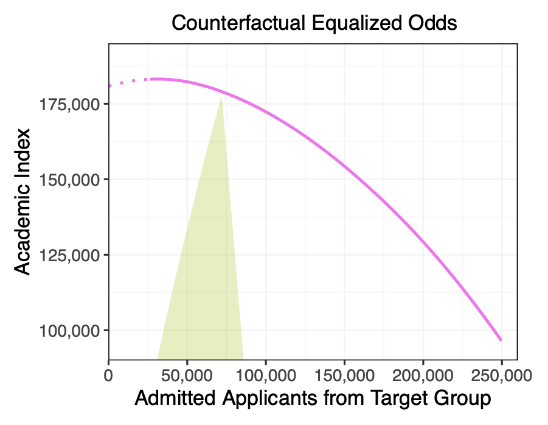
|
The Measure and Mismeasure of Fairness
Sam Corbett-Davies*, Johann Gaebler*, Hamed Nilforoshan*, Ravi Shroff, Sharad Goel JMLR 2023 |
|
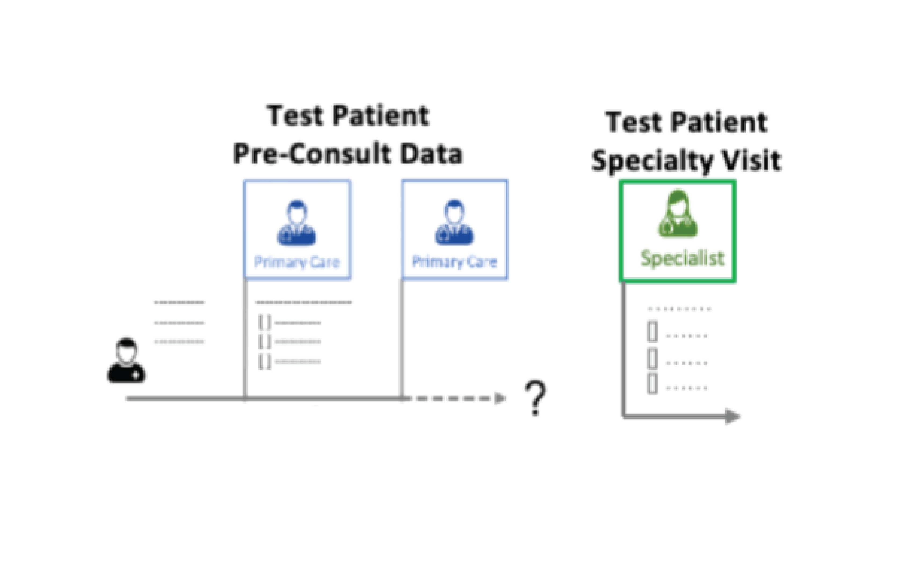
|
Graph-Based Clinical Recommender: Predicting Specialists Procedure Orders using Graph Representation Learning
Sajjad Fouladvand*, Federico Reyes Gomez*, Hamed Nilforoshan, Matthew Schwede, Morteza Noshad, Olivia Jee, Jiaxuan You, Rok Sosic, Jure Leskovec, Jonathan Chen Journal of Biomedical Informatics |
2022
|
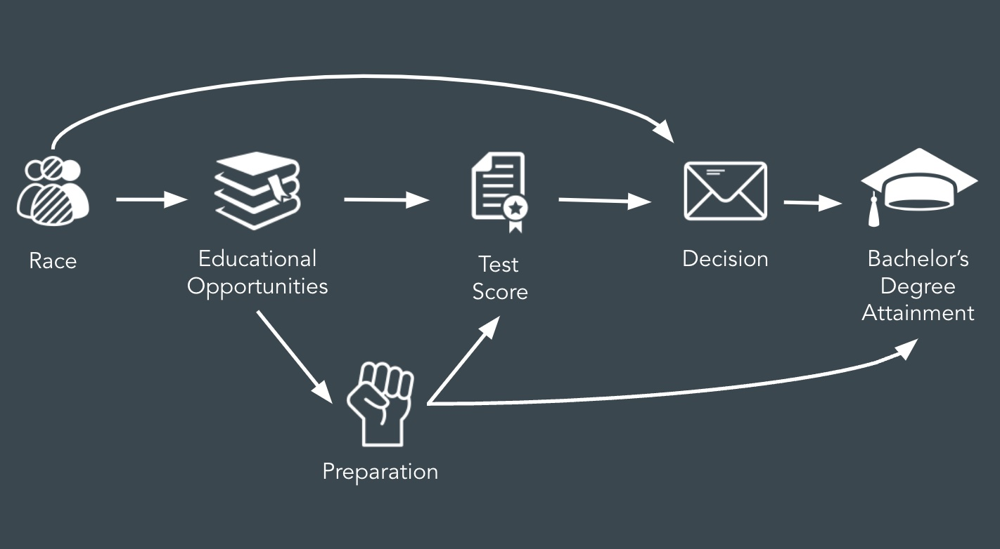
|
Causal Conceptions of Fairness and their Consequences
Hamed Nilforoshan*, Johann Gaebler*, Ravi Shroff, Sharad Goel ICML 2022 Long Talk ACIC 2022 Oral Best Paper Award (ICML Outstanding Paper) |
|
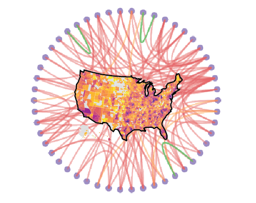
|
Human Interaction Networks Reveal that Large Cities Facilitate Segregation
Hamed Nilforoshan*, Wenli Looi*, Emma Pierson*, Blanca Villanueva, Nic Fishman, Yiling Chen, John Solar, Beth Redbird, David Grusky, Jure Leskovec Under Review |
2021
|
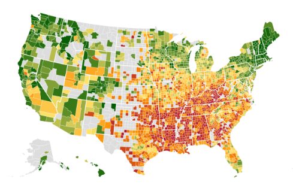
|
Large-Scale Diet Tracking Data Reveal Disparate Impacts of Food Environment
Tim Althoff, Hamed Nilforoshan, Jenna Hua, Jure Leskovec Nature Communications pdf Nature Communications press release dataset |
|
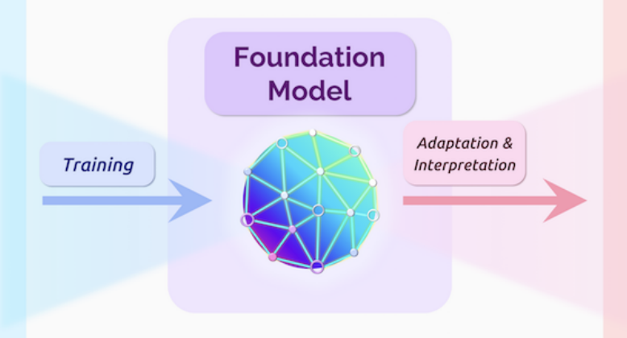
|
On the Opportunities and Risks of Foundation Models
Rishi Bommasani,...,Hamed Nilforoshan,..., Percy Liang (116 authors) Arxiv 2021 |
2019
|
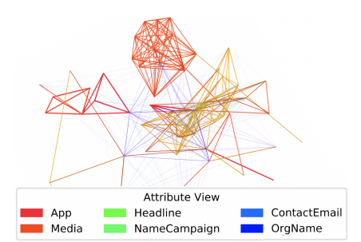
|
SliceNDice: Mining Suspicious Multi-attribute Entity Groups with Multi-view Graphs
Hamed Nilforoshan, Neil Shah IEEE DSAA 2019 pdf slides code |
2018
|
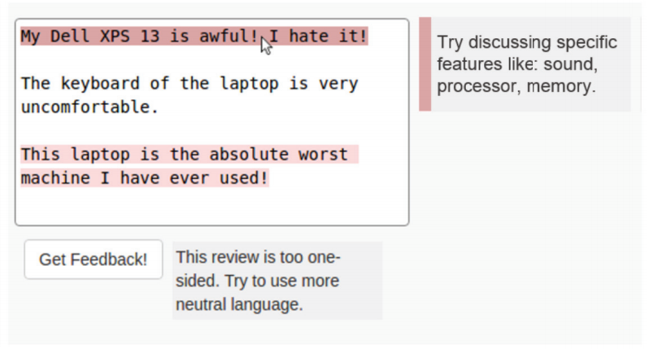
|
Leveraging Quality Prediction Models for Automatic Writing Feedback
Hamed Nilforoshan, Eugene Wu ICWSM 2018 pdf slides code |
2017
|
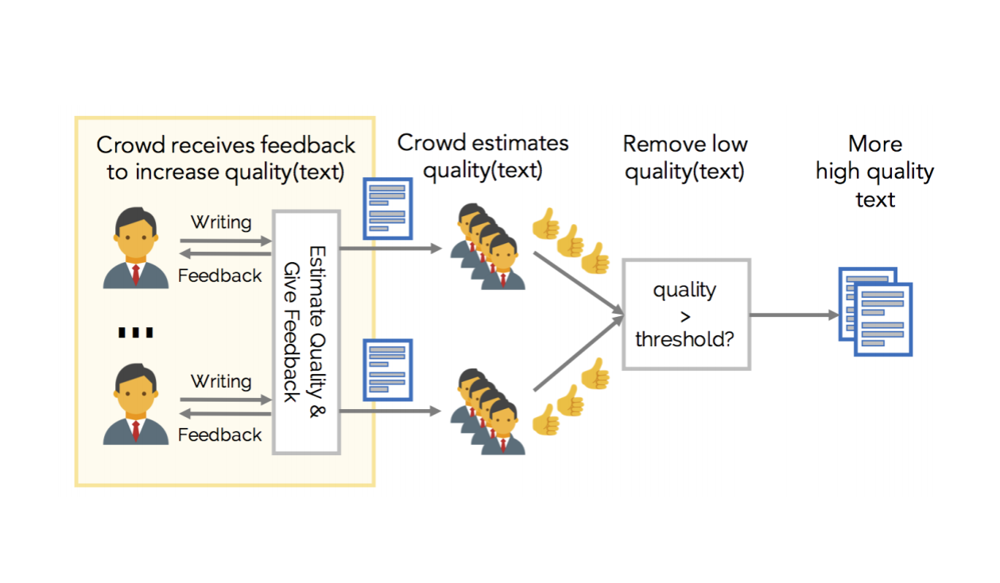
|
PreCog: Improving Crowdsourced Data Quality Before Acquisition
Hamed Nilforoshan, Jiannan Wang, Eugene Wu Arxiv 2017 |
|
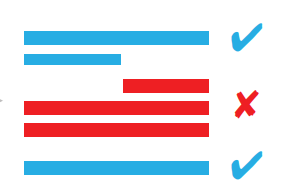
|
Segment-Predict-Explain for Automatic Writing Feedback
Hamed Nilforoshan, James Sands, Rahul Khanna, Eugene Wu Collective Intelligence 2017 |
PhD Student
Computer Science
Stanford University
Gates CS Building
353 Jane Stanford Way
Stanford, CA 94305